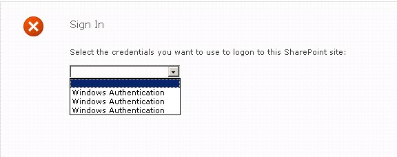

Summary: Error 403 implies that access to a web-application is being denied, despite having the proper permissions. This can happen when the claims on a web-app or site collection are mis-configured or otherwise not supported by SPAA.
Issue:
SPAA gets a "403 Forbidden" error while attempting to negotiate site collection or web
app connections.
Try to manually browse to the site collection or site reported in the error through IE.
Typically Error 403 implies that SharePoint is being blocked by IE, check this by trying
to log into SharePoint on from the server StealthAUDIT is on through the browser. If
it's blocked, add it to the Trusted Sites list found in IE, in the Internet Options � Security � Trusted Sites.
If you can get to the site through the browser it isn't blocked. However if you see
something similar to the screenshot below then there is a misconfiguration with the
claims service for the Web-App or Site collection.

This screen is inserted into the authentication process in one of the following
scenarios:
- A web application is configured with multiple authentication providers.
- A provider is configured with multiple ways to authenticate.
- The configuration becomes broken. For example the default "Claims Authentication Provider" can be configured to support both integrated windows and forms based authentication simultaneously. In this kind of scenario, SharePoint displays this screen to allow the user to select which authentication method to use. (If it were configured for both we would see options Windows Authentication and Active Directory or SQL credentials for example)
SPAA is not able to complete the negotiation when SharePoint has been configured in
this manner. We are logging a feature enhancement ticket to support this.
Instructions:
A big hint that something is broken is when the same provider is listed more than once
- showing this to a SharePoint admin may be sufficient for them to be able to fix it -
if not the following steps worked for us:
- View the configuration in the SharePoint central admin console by selecting the web app in Application Management � "Manage Web Applications", �and then click on "Authentication Providers" in the ribbon. Their CA console showed just a single auth provider, similar to this:

Clicking where it says "Default" under the zone column brings up configuration for an
individual authentication provider. Their "Claims Based Authentication" provider was
configured as shown in the following screen shot
If both the "Enable Windows Authentication" and "Enable Forms Based Authentication"
checkboxes were checked that would be the cause of the problem. It is not typical to
have both forms based auth and windows authentication enabled for a single zone.
However when only one of those options is selected but multiple copies are offered to
choose from there is a misconfiguration somewhere in SharePoint or in the web.config
file.
Authentication providers are configured per-web-application, in the web.config file.
This can be accessed via the IIS admin console by selecting the web application in the
tree, right clicking and selecting "Explore". Load the web.config file in Notepad.
Each authentication provider should have only a single element in the config file. The
default config looks like this (for SP2013):
If there are multiple or duplicate
In some situations the web.config file may only have a single row which is correct as
far as the web.config file is concerned which indicates the misconfiguration is
elsewhere. The easiest way to reset configuration for the authentication provider is to
use the SharePoint admin console to edit the config to something else, and then set it
back to what it should be. We did this as follows:
On the previous screen shot, we clicked the dropdown box under "Integrated Windows
Authentication" (where it shows "Negotiate (Kerberos)") and set it to anything else
(typically the only other choice is NTLM), and then click SAVE at the bottom of the
dialog, and then set the dropdown box back to what it was originally set to, and click
SAVE again. Note: Track the initial setting the customer has, and make sure it ends up
reset to the same setting.
After making this change try browsing to the site where the issue was occurring and you
should only see one option displayed for credentials. Scans should now be able to
connect and scan without 403 errors.
Product:
StealthAUDIT
Module: SA
- DC - SPAA - Permissions;SA - DC - SPAA - Sensitive Data
Versions:
8.1, 8.2
Dev Ticket:
SASP-3896
Legacy Article ID:
2196